CF carboxyfluorescein 制备与沉淀
用 活性炭 activated charcoal 处理 treat CF，去除 remove 杂质并获得可继续 纯化 purify 的橙红色 CF 粉末。
- 0.5 g CF + 0.625 g 活性炭 溶于 dissolve in 75 ml 99% 乙醇 ethanol。
- 加热 heat 至沸腾后趁热用 Whatman 50 滤纸 filter paper 过滤 filter。
- 滤液 filtrate 用水按 1:2 稀释 dilute，4°C 冷却 1 h，再 -20°C 促 沉淀 precipitate。
- 滤纸完全 干燥 dry 后 刮取 scrape off CF 粉末。
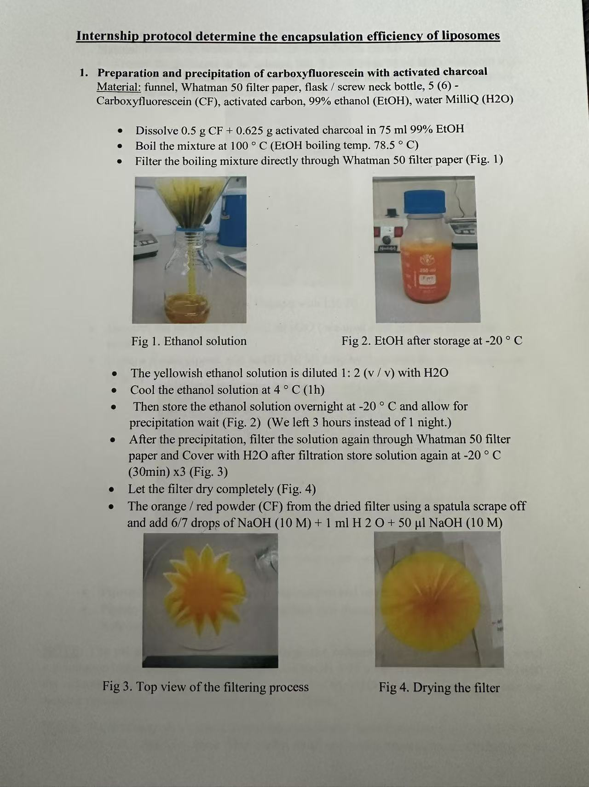
图 1：CF 乙醇溶液、低温沉淀与滤纸干燥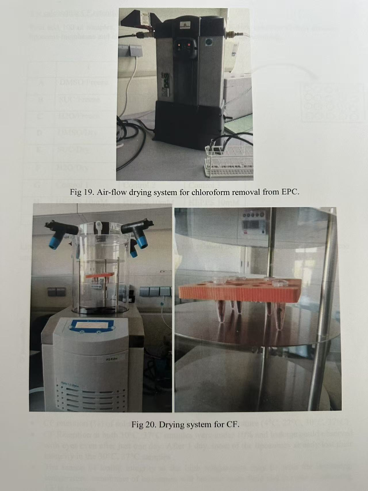
图 20：CF 冻干/干燥系统CF 柱纯化与冻干
通过 Sephadex LH-20 柱 LH-20 column 分离 separate 目标 CF 组分，收集 collect 中间深红色组分并 冻干 freeze-dry。
- LH-20 溶于水后 装柱 pack column，胶床 gel bed 高度约 25 cm。
- 用 NaOH sodium hydroxide 调至 adjust to 红色并保持碱性。
- 上样 load sample 后 洗脱 elute，收集中间深红色目标组分。
- 液氮 liquid nitrogen 冻融 freeze-thaw 3 次后真空冻干过夜。
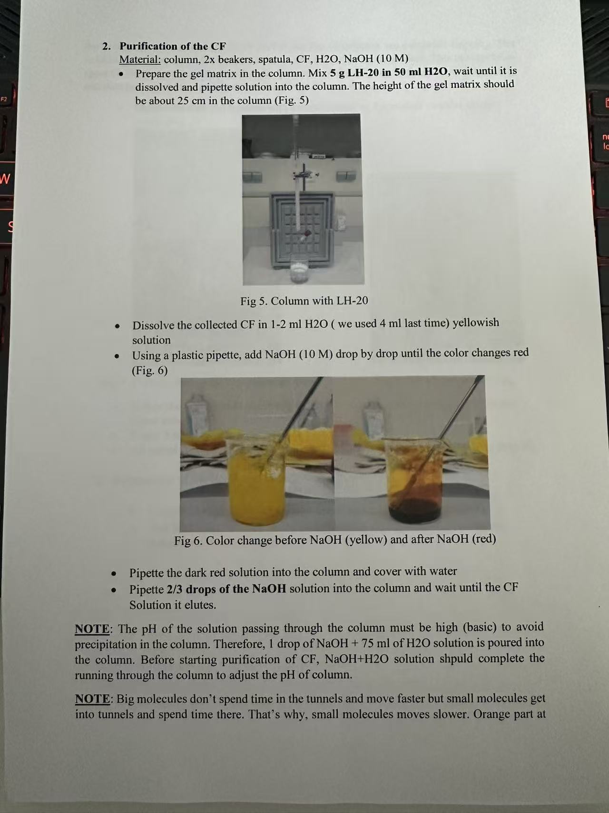
图 5-6：LH-20 柱与 NaOH 调色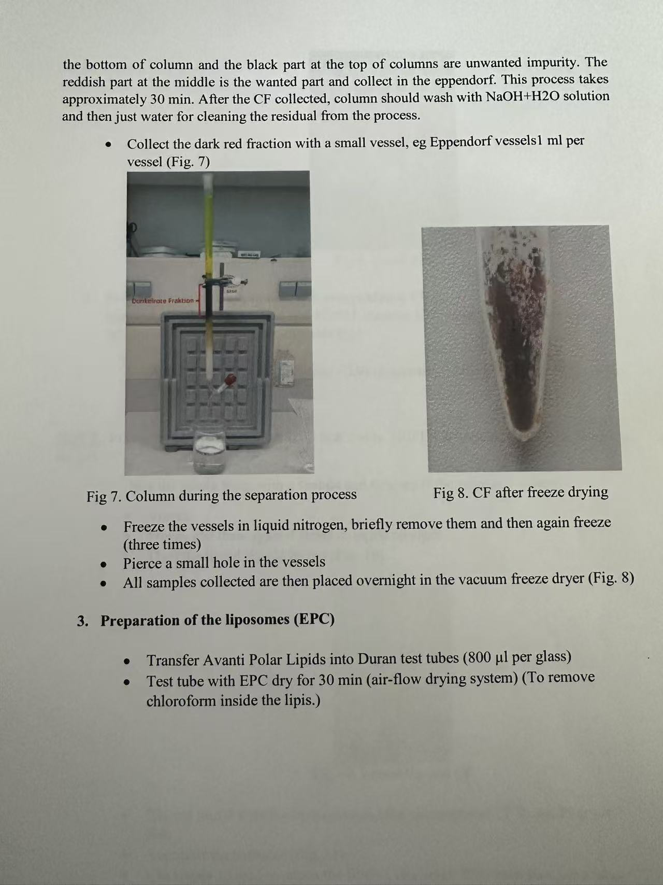
图 7-8：分离深红色组分并冻干得到 obtain 纯化干燥 CF
EPC egg phosphatidylcholine 脂质膜制备
将 EPC 中的 氯仿 chloroform 去除 remove，形成后续 水化 hydrate 包封 CF 的干燥 脂质膜 lipid film。
- 将 Avanti EPC 转移 transfer 至 Duran 试管 Duran tube。
- 用 气流干燥系统 air-flow dryer 处理约 30 min。
- 得到管壁上的干燥 EPC 脂质膜。
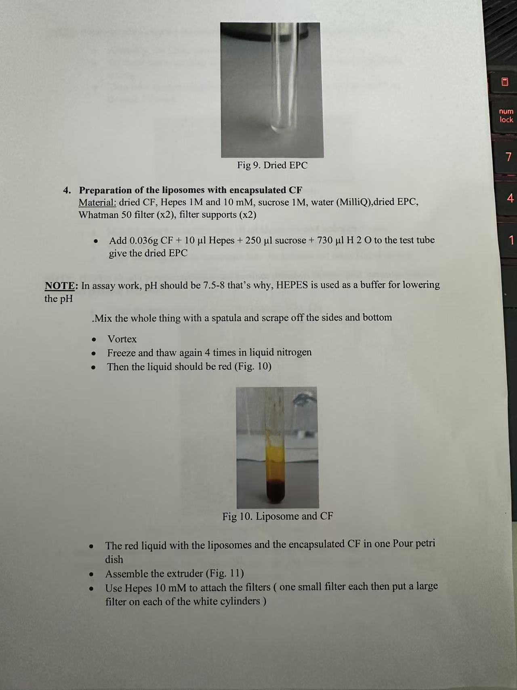
图 9：干燥 EPC图 19：EPC 氯仿去除气流系统包封 encapsulate CF 并形成 脂质体 liposome
用高浓度 CF 溶液 水化 hydrate EPC 脂质膜，经过 涡旋 vortex 和冻融促进 CF 进入脂质体 内腔 lumen。
- 向干燥 EPC 中 加入 add CF、HEPES、蔗糖 sucrose 和水。
- 用 刮勺 spatula 混匀 mix 后涡旋。
- 液氮冻融 4 次，样品应呈红色。
图 10：脂质体与 CF 混合后的红色液体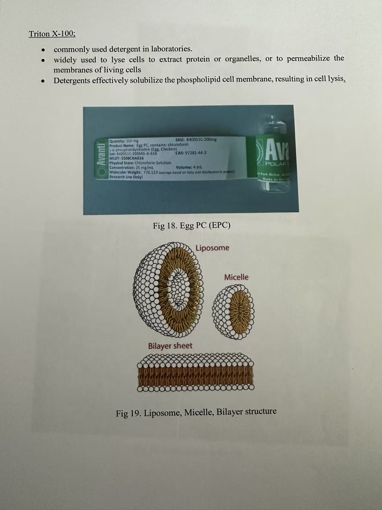
图 19：脂质体双层结构示意
形成 form 含 CF 的 粗脂质体悬液 crude liposome suspension
挤出 extrude 均一化
通过 100 nm 滤膜 100 nm membrane 挤出，使脂质体 粒径 particle size 更加均一。
- 组装 assemble 挤出器 extruder。
- 先用 10 mM HEPES 试跑 test run，确认系统密封。
- 用 注射器 syringe 吸取 draw up 样品，通过挤出器 21 次。
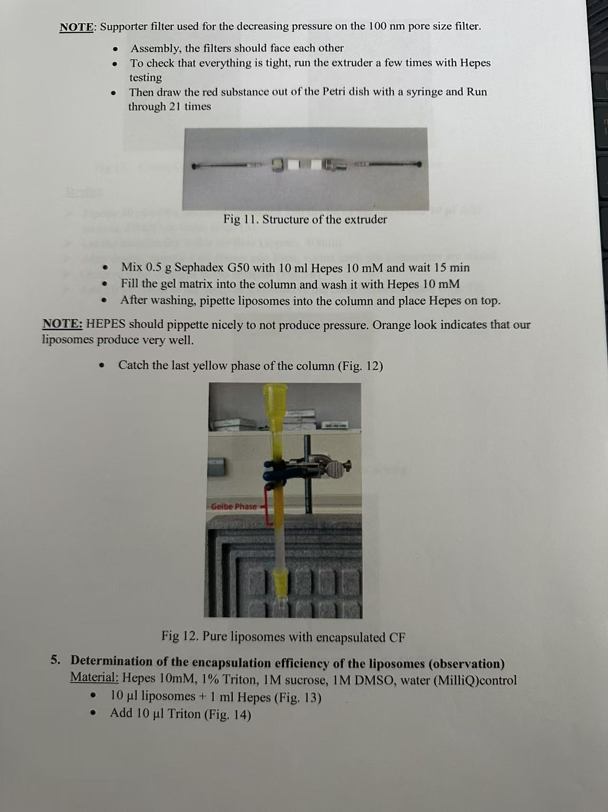
图 11：挤出器结构与操作要点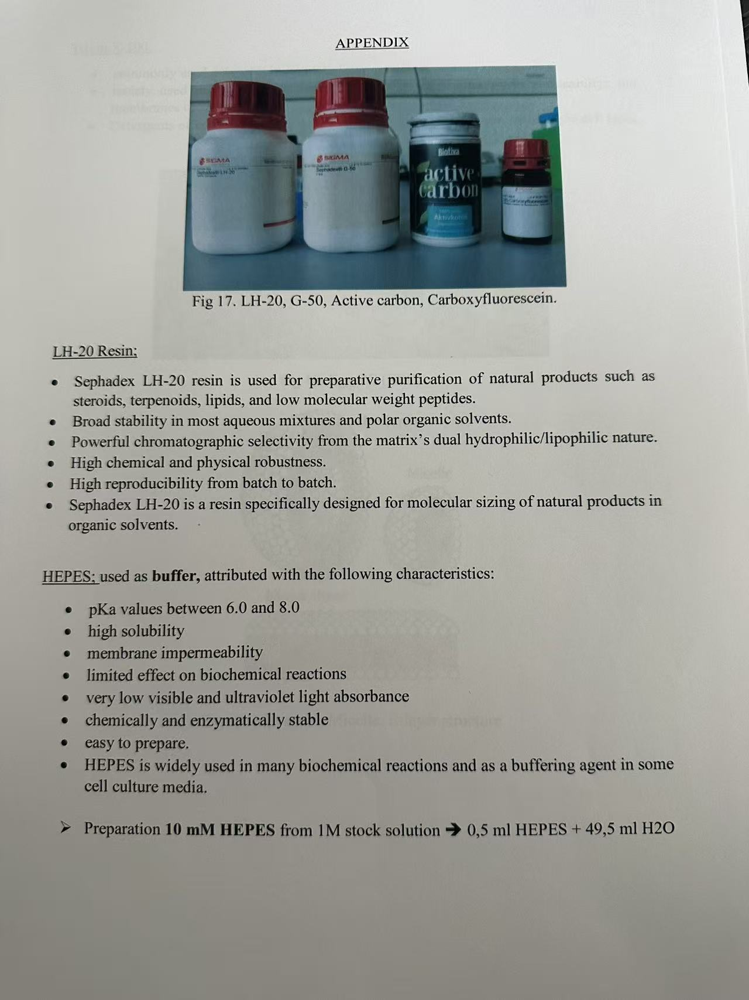
附录：LH-20、G-50、活性炭、CFG-50 柱 G-50 column 去除游离 CF
用 Sephadex G-50 柱 size-exclusion column 分离未包封的 游离 CF free CF，收集含包封 CF 的脂质体组分。
- 0.5 g Sephadex G-50 加 10 ml 10 mM HEPES，静置约 15 min。
- 装柱 pack column 后用 HEPES 洗柱 wash column。
- 收集 collect 最后黄色相，得到纯化后的包封 CF 脂质体。
图 12：收集黄色相，即包封 CF 的脂质体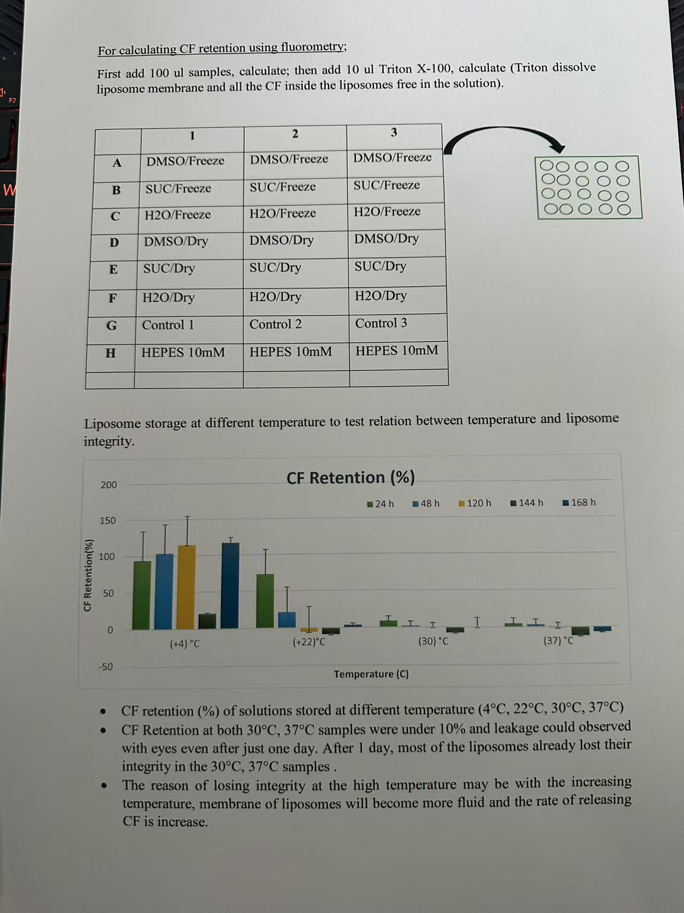
结果示例：温度影响脂质体完整性
得到 obtain 纯化的 CF 脂质体样品
观察法 observation method：干燥/冷冻处理
通过 颜色变化 color change 初步 判断 assess 脂质体是否破裂以及 CF 是否 释放 release。
- 每组取 10 μl 脂质体，分别加入 H2O、蔗糖或 DMSO。
- 干燥组 drying group：气流干燥后加 HEPES 复溶 resuspend。
- 冷冻组 freezing group：液氮冷冻后加 HEPES 复溶。
- 加入 Triton X-100 detergent 后再次 观察 observe 颜色强度。
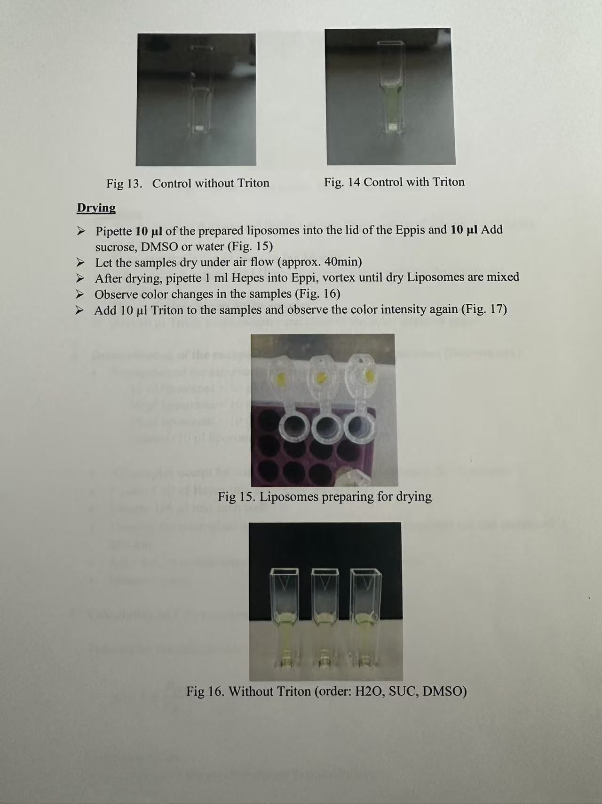
图 13-16：Triton 前的对照/干燥观察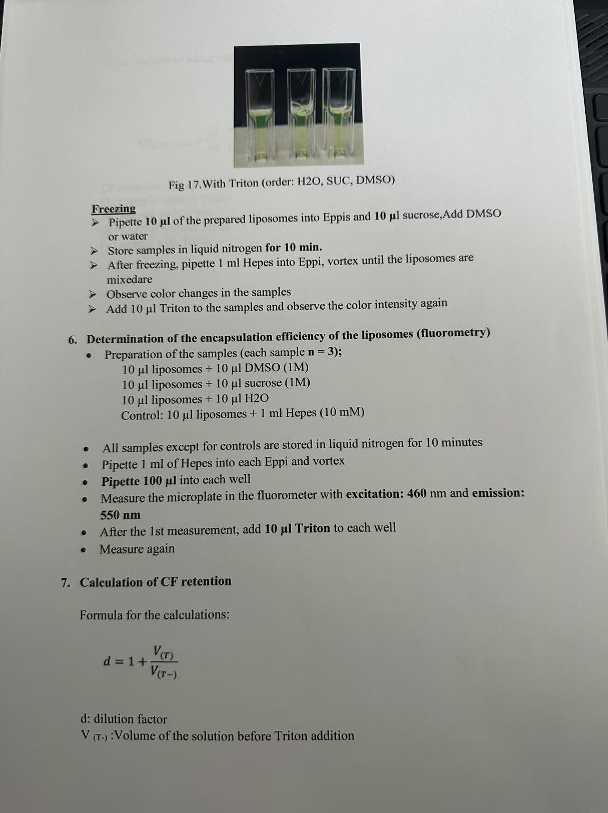
图 17：Triton 后颜色增强，说明 CF 释放荧光法 fluorometry 测定封存率
先 测定 measure 未裂解状态的 背景荧光 background fluorescence，再加入 Triton 裂解 lyse 脂质体，比较释放前后 荧光强度 fluorescence intensity。
- 样品设置 n = 3：DMSO、蔗糖、H2O 处理，以及 HEPES 对照。
- 每孔加入 100 μl 样品，激发 excitation 460 nm，发射 emission 550 nm。
- 第一次 读数 read 后每孔加入 10 μl Triton，再次测定。
图 17：荧光检测前后颜色变化孔板排布与 CF retention 结果示例